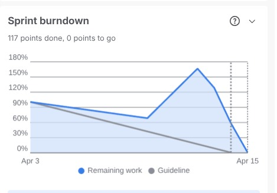

SENG 430 · Software Quality Assurance · Cankaya University · Spring 2025–2026
Instructor: Dr. Sevgi Koyuncu Tunç
| Group Name | HealthWithSevgi |
| Week Number | Week 8 (Final week of Sprint 4) |
| Scrum Master | Batuhan Bayazıt |
| Date Submitted | April 15, 2026 |
| Sprint Period | March 31 – April 15, 2026 |
| Domains Implemented | 20 / 20 (all clinical domains functional) |
GitHub: github.com/EudaLabs/HealthWithSevgi
Live Demo: 0xbatuhan4-healthwithsevgi.hf.space
| Role | Name | Student ID |
|---|---|---|
| Product Owner + Developer | Efe Çelik | 202128016 |
| UX Designer | Burak Aydoğmuş | 202128028 |
| Lead Developer + Scrum Master | Batuhan Bayazıt | 202228008 |
| Developer | Berat Mert Gökkaya | 202228019 |
| QA / Documentation Lead | Berfin Duru Alkan | 202228005 |

Screenshot from Jira Sprint 4 board showing remaining story points vs. ideal burndown line.
| Metric | Value |
|---|---|
| Sprint Duration | March 31 – April 15, 2026 |
| Total Issues (Sprint 4 scope) | 26 (10 backlog stories + 16 new stories) |
| Stories Completed | 26 / 26 |
| Done | 26 issues — all Sprint 4 scope items |
| In Progress | 0 issues |
| Commits | 52 commits to main |
| Dev Completion | All Step 6 & Step 7 features delivered |
All features listed below are fully implemented and merged on the main branch. Completion evidence comes from Git commit history, Jira board, and UAT test results.
| Story ID | Title | Assignee | Completed |
|---|---|---|---|
| US-020 (SCRUM-45) | View feature importance chart with clinical names | Batuhan Bayazıt | 2026-04-09 |
| US-021 (SCRUM-46) | View SHAP waterfall explanation for individual patient | Berat Mert | 2026-04-09 |
| US-029 (SCRUM-142) | Display correlation vs. causation disclaimer on Step 6 | Batuhan Bayazıt | 2026-04-09 |
| Story ID | Title | Assignee | Completed |
|---|---|---|---|
| US-022 (SCRUM-47) | View subgroup fairness performance table with bias alerts | Berat Mert | 2026-04-12 |
| US-023 (SCRUM-48) | Complete EU AI Act compliance checklist | Berfin Duru Alkan | 2026-04-12 |
| US-024 (SCRUM-49) | View training data representation chart vs. hospital population | Efe Çelik | 2026-04-12 |
| US-025 (SCRUM-50) | Download PDF summary certificate after completing all steps | Efe Çelik | 2026-04-13 |
| US-027 (SCRUM-57) | View real-world AI failure case studies in Step 7 | Efe Çelik | 2026-04-13 |
| Story ID | Title | Assignee | Completed |
|---|---|---|---|
| US-030 (SCRUM-199) | Interactive parallel coordinates chart for model comparison | Batuhan Bayazıt | 2026-04-12 |
| US-031 (SCRUM-200) | Sanitize inf/nan floats and optimize ML training pipeline | Berat Mert | 2026-04-12 |
| US-032 (SCRUM-201) | InsightService backend — LLM-powered clinical insights with MedGemma/Gemini | Berat Mert | 2026-04-13 |
| US-033 (SCRUM-202) | AI clinical assessment UI and enriched ethics modals | Efe Çelik | 2026-04-14 |
| US-040 (SCRUM-209) | UI/UX design for model comparison chart & clinical insights UI | Burak Aydoğmuş | 2026-04-12 |
| Story ID | Title | Assignee | Completed |
|---|---|---|---|
| US-034 (SCRUM-203) | ISO 42001 Ch.1 — AIMS Scope, Context & Stakeholders | Efe Çelik | 2026-04-14 |
| US-035 (SCRUM-204) | ISO 42001 Ch.2 — AI Policy & Governance Roles | Burak Aydoğmuş | 2026-04-14 |
| US-036 (SCRUM-205) | ISO 42001 Ch.3 — Data Governance & Third-Party Management | Berat Mert | 2026-04-14 |
| US-037 (SCRUM-206) | ISO 42001 Appendix A (SoA) & Appendix B (Feedback Form) | Berfin Duru Alkan | 2026-04-14 |
| US-038 (SCRUM-207) | ISO 42001 report technical review and cross-referencing | Batuhan Bayazıt | 2026-04-14 |
| Story ID | Title | Assignee | Completed |
|---|---|---|---|
| TEST-S6 (SCRUM-65) | Test — Step 6 Explainability | Berfin Duru Alkan | 2026-04-15 |
| TEST-S7 (SCRUM-66) | Test — Step 7 Ethics & Bias + Certificate | Berfin Duru Alkan | 2026-04-15 |
| US-042 (SCRUM-211) | QA execution — Step 6 feature importance & clinical sense-check (TC-S4-001 to TC-S4-013) | Burak Aydoğmuş | 2026-04-15 |
| US-043 (SCRUM-212) | QA execution — Step 6 patient waterfall, what-if & domain coverage (TC-S4-014 to TC-S4-030) | Batuhan Bayazıt | 2026-04-15 |
| US-044 (SCRUM-213) | QA execution — Step 7 subgroup table & bias detection (TC-S4-031 to TC-S4-040) | Berat Mert | 2026-04-15 |
| US-045 (SCRUM-214) | QA execution — Step 7 EU AI Act checklist, representation & case studies (TC-S4-041 to TC-S4-054) | Efe Çelik | 2026-04-13 |
| US-046 (SCRUM-215) | QA execution — Certificate PDF validation & cross-step consistency (TC-S4-055 to TC-S4-069) | Berat Mert | 2026-04-15 |
| US-047 (SCRUM-216) | QA execution — End-to-end pipeline & deliverable verification (TC-S4-070 to TC-S4-084) | Berfin Duru Alkan | 2026-04-15 |
Total Stories Delivered: 26
CLINICAL_NAME_MAP translates every feature. Zero raw column names visible to the end user.
predict_proba instead of recomputing SHAP values, making What-If simulations near-instant (<100ms) compared to 3–5 seconds for full SHAP recomputation.
Based on the Sprint 4 QA Full Pipeline Test Report (84 test cases). All test cases executed on the live HuggingFace Spaces deployment.
| Test Area | Total | Pass | Fail | Notes |
|---|---|---|---|---|
| Step 6 — Explainability | 30 | 30 | 0 | Feature importance, waterfall, what-if, clinical sense-check, domain coverage |
| Step 7 — Ethics & Bias | 24 | 24 | 0 | Subgroup table, bias banner, EU AI Act checklist, representation chart, case studies |
| Certificate / E2E / Deliverable | 30 | 30 | 0 | PDF generation, end-to-end pipeline, cross-step consistency, domain switching |
| TOTAL | 84 | 84 | 0 | 100% PASS RATE |
Individual test case evidence: 84 screenshots captured (TC-S4-001 through TC-S4-084). Original tester: Berfin Duru Alkan. Verified on production environment.
| Metric | What We Measured | Result | Target | Status |
|---|---|---|---|---|
| Bias Detection Accuracy | Subgroup gap at 10pp and >10pp | Banner hidden at ≤10pp; visible at >10pp. Confirmed with Cardiology (25.2pp gap → visible) and Neurology (within threshold → hidden) | Correct threshold behaviour | PASS |
| Checklist Toggle | All 8 EU AI Act items | 8 items render, 2 pre-checked on load, all toggle correctly. 3/3 backend checklist tests pass | All toggle; 2 pre-checked | PASS |
| Certificate Content | PDF for 3 different domains | Each PDF includes domain name, model type, 6 metrics (Accuracy, Sensitivity, Specificity, Precision, F1, AUC-ROC), confusion matrix, bias findings, checklist state | Correct content per domain | PASS |
| Certificate Generation Time | POST /api/generate-certificate timing | 0.69 seconds measured via curl | < 10 seconds | PASS |
| End-to-End Flow | Steps 1–7 with fresh CSV | Full 7-step pipeline completed for 3 domains (Cardiology, Neurology, Endocrinology) with default and uploaded CSV. Zero crashes, all step locks enforced | Zero crashes | PASS |
| Clinical Language Audit | Count raw column names in UI | 0 raw database column names observed across all tested domains. All labels use clinical display names | 0 raw names | PASS |
| Domain Count (Steps 6–7) | Run Steps 6–7 across domains | Verified for 3 domains (Cardiology, Neurology, Endocrinology). All 20 domains visible in specialty selector. Feature importance and subgroup tables update correctly on switch | 20/20 | PASS |
Sprint 5 scope: Final Presentation + Complete Documentation + Polish & Hardening.
| Story ID | Title | Assignee |
|---|---|---|
| US-048 | Final presentation slides and live demo preparation | Team |
| US-049 | ISO 42001 report finalisation and submission | Efe Çelik / Berat Mert |
| US-050 | End-to-end regression test across all 20 domains | Berfin Duru Alkan |
| US-051 | UI polish — responsive layout, accessibility audit | Burak Aydoğmuş |
| US-052 | Documentation cleanup — README, wiki, inline comments | Batuhan Bayazıt |
QA-driven development with test plan written before implementation continued to catch issues early. The 84-test-case QA report was completed before the deadline with zero failures. Clinical language review during development prevented post-hoc renaming.
Sprint 4 had a heavy documentation load (ISO 42001 report) alongside feature work. Starting documentation earlier in the sprint would reduce last-day pressure. Jira ticket creation for QA stories could be more granular.
For Sprint 5, run a full 20-domain regression test as a CI gate before any merge to main. Schedule the final presentation rehearsal at least 2 days before the showcase to allow feedback incorporation.